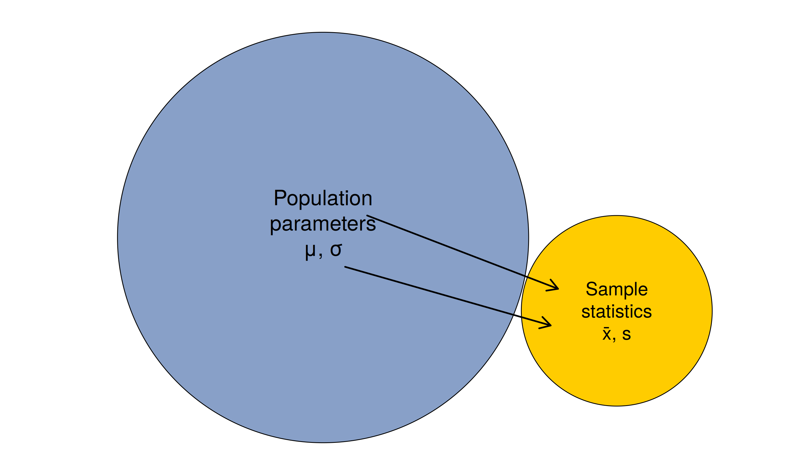
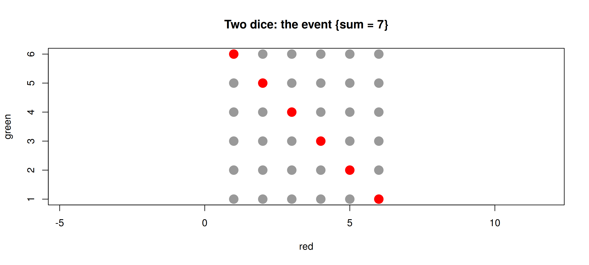
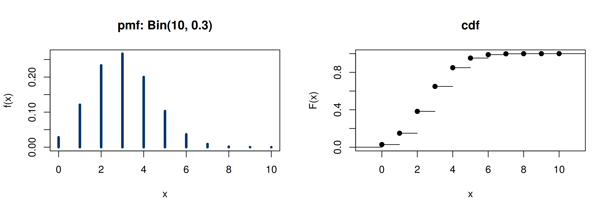
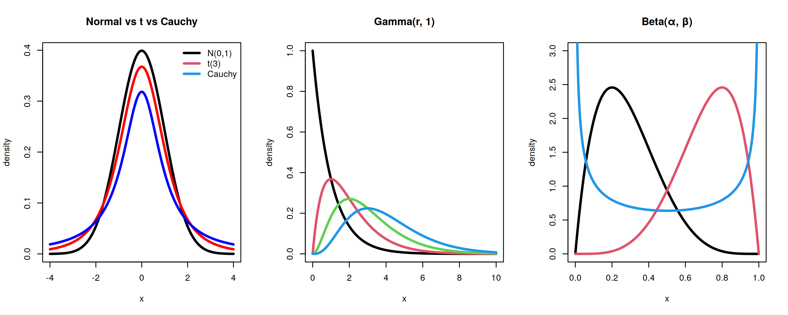
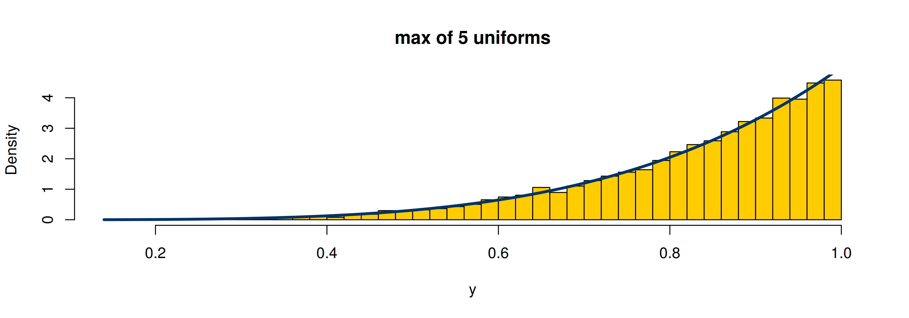
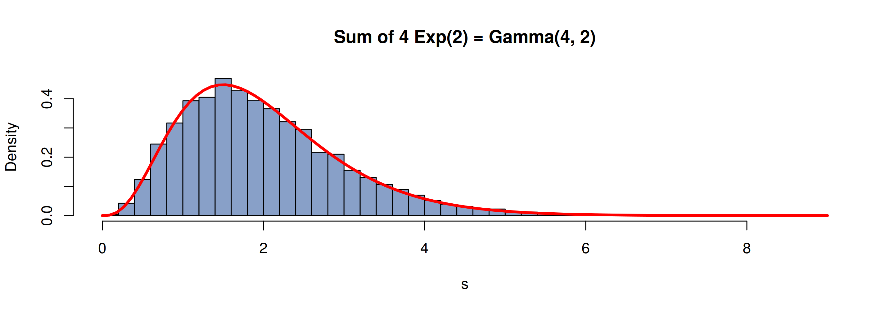

Probability Review 🎲
MATH 4750 / MSSC 5750 Computational Statistics
Dr. Mehdi Maadooliat
Marquette University
MATH 4750 - Spring 2027
Probability Review
Populations, samples, and types of variables
Counting and probability rules
Random variables, distributions, and expectation
Multivariate distributions, independence, covariance
Common distributions and functions of random variables
What is Statistics?
Two Branches of Statistics
Descriptive statistics: collection, presentation, and description of sample data (tables, graphs, summaries).
Inferential statistics: interpreting descriptive results to make decisions and draw conclusions about the population.
- Population: the entire group of interest
- Sample: a part of the population selected to draw conclusions about the entire population
Parameters vs. Statistics
Describing a population
- Use Greek letters
- Mean \(\mu\), standard deviation \(\sigma\), variance \(\sigma^2\), proportion \(p\)
- For a given population there is only one true value of each
- These fixed (unknown) values are parameters
Describing a sample
- Sample mean \(\bar{x}\), standard deviation \(s\), variance \(s^2\), proportion \(\hat p\)
- Different samples give different values
- These random quantities are statistics
Types of Variables
- Qualitative (categorical)
- Nominal: no ordering (major, zip code)
- Ordinal: ordered categories (letter grade, rank)
- Quantitative (numerical)
- Discrete: countable values with gaps (hours enrolled)
- Continuous: a continuum (weight)
| Variable | Type | R |
|---|---|---|
| Weight | Numeric - continuous | numeric |
| Hours enrolled | Numeric - discrete | integer |
| Major | Categorical - nominal | factor |
| Zip code | Categorical - nominal | character/factor |
| Letter grade | Categorical - ordinal | ordered |
Why is a zip code categorical even though it is written with digits?
Counting
Combinatorial Methods
Multiplication rule. If an operation consists of \(k\) steps that can be done in \(n_1, n_2, \dots, n_k\) ways, the whole operation can be done in \(n_1 \cdot n_2 \cdots n_k\) ways.
- Permutations of \(n\) distinct objects: \(n!\)
- Permutations of \(n\) objects taken \(r\) at a time: \({}_nP_r = \dfrac{n!}{(n-r)!}\)
- Permutations with \(n_1, \dots, n_k\) objects of \(k\) kinds: \(\dfrac{n!}{n_1!\, n_2! \cdots n_k!}\)
- Combinations: \(\dbinom{n}{r} = \dfrac{n!}{r!(n-r)!}\), and the binomial theorem \((x+y)^n = \sum_{r=0}^n \binom{n}{r} x^{n-r} y^r\)
Probability
Sample Spaces and Events
- Sample space \(S\): set of all possible outcomes; each outcome is a sample point.
- Events are subsets of \(S\); use union \(A\cup B\), intersection \(A\cap B\), complement \(A'\).
[1] 0.1667
Axioms and Basic Rules
Postulates. \(P(A) \ge 0\); \(P(S)=1\); for mutually exclusive \(A_1, A_2,\dots\), \(P(A_1\cup A_2\cup\cdots) = \sum_i P(A_i)\).
- \(P(A') = 1 - P(A)\), \(\quad P(\varnothing) = 0\)
- \(P(A\cup B) = P(A) + P(B) - P(A\cap B)\)
- \(P(A\cup B\cup C) = P(A)+P(B)+P(C) - P(A\cap B) - P(A\cap C) - P(B\cap C) + P(A\cap B\cap C)\)
Conditional Probability, Independence, Bayes’ Rule
- \(P(B\mid A) = \dfrac{P(A\cap B)}{P(A)}\), \(\quad\) \(A\) and \(B\) independent iff \(P(A\cap B) = P(A)P(B)\).
- Total probability: if \(B_1,\dots,B_k\) partition \(S\), \(P(A) = \sum_i P(B_i)P(A\mid B_i)\).
- Bayes’ rule: \(P(B_r\mid A) = \dfrac{P(B_r)P(A\mid B_r)}{\sum_i P(B_i)P(A\mid B_i)}\).
A test is 95% sensitive and 90% specific; prevalence is 2%. What is \(P(\text{disease}\mid +)\)?
Random Variables
Discrete Random Variables
- A random variable \(X\) is a real-valued function on \(S\).
- pmf \(f(x) = P(X=x)\) with \(f(x)\ge 0\) and \(\sum_x f(x) = 1\).
- cdf \(F(x) = P(X\le x) = \sum_{t\le x} f(t)\), a non-decreasing step function.

Continuous Random Variables
- pdf \(f(x)\ge 0\) with \(\int_{-\infty}^{\infty} f(x)\,dx = 1\) and \(P(a\le X\le b) = \int_a^b f(x)\,dx\).
- For continuous \(X\): \(P(a\le X\le b) = P(a< X< b)\) since \(P(X=a)=0\).
- cdf \(F(x) = \int_{-\infty}^x f(t)\,dt\) and \(f(x) = F'(x)\).
Joint, Marginal, and Conditional Distributions
- Joint pmf/pdf \(f(x,y)\): \(P\big((X,Y)\in A\big) = \iint_A f(x,y)\,dx\,dy\)
- Marginal: \(g(x) = \sum_y f(x,y)\) or \(\int f(x,y)\,dy\)
- Conditional: \(f(x\mid y) = f(x,y)/h(y)\), \(h(y) \neq 0\)
- \(X_1, \dots, X_n\) independent iff \(f(x_1,\dots,x_n) = f_1(x_1)\cdots f_n(x_n)\)
1 2 3 4 5 6
1 0.028 0.028 0.028 0.028 0.028 0.028
2 0.000 0.056 0.028 0.028 0.028 0.028
3 0.000 0.000 0.083 0.028 0.028 0.028
4 0.000 0.000 0.000 0.111 0.028 0.028
5 0.000 0.000 0.000 0.000 0.139 0.028
6 0.000 0.000 0.000 0.000 0.000 0.167 1 2 3 4 5 6
0.1667 0.1667 0.1667 0.1667 0.1667 0.1667 1 2 3 4 5 6
0.091 0.091 0.091 0.091 0.091 0.545 Expectation
Expected Value and Moments
- \(\mathrm{E}[X] = \sum_x x f(x)\) or \(\int x f(x)\,dx\); \(\quad\mathrm{E}[g(X)] = \sum_x g(x)f(x)\) or \(\int g(x) f(x)\,dx\)
- \(\mathrm{E}[aX+b] = a\mathrm{E}[X]+b\)
- \(r\)th moment about the origin \(\mu_r' = \mathrm{E}[X^r]\); about the mean \(\mu_r = \mathrm{E}[(X-\mu)^r]\)
- \(\sigma^2 = \mathrm{Var}(X) = \mu_2 = \mu_2' - \mu^2\), \(\quad \mathrm{Var}(aX+b) = a^2\sigma^2\)
Chebyshev’s Theorem and the MGF
Chebyshev. For any \(k>0\), \(P(|X-\mu| < k\sigma) \ge 1 - \dfrac{1}{k^2}\).
[,1] [,2] [,3]
observed 0.9178 0.9501 0.9821
bound 0.5556 0.7500 0.8889- Moment generating function \(M_X(t) = \mathrm{E}[e^{tX}]\), with \(\left.\dfrac{d^r M_X(t)}{dt^r}\right|_{t=0} = \mu_r'\).
- If \(X_1, \dots, X_n\) are independent and \(Y = \sum X_i\), then \(M_Y(t) = \prod_i M_{X_i}(t)\).
Independence, Covariance, and Linear Combinations
- \(\mathrm{Cov}(X,Y) = \mathrm{E}[(X-\mu_X)(Y-\mu_Y)] = \mathrm{E}[XY] - \mathrm{E}[X]\mathrm{E}[Y]\)
- If \(X\) and \(Y\) are independent, \(\mathrm{E}[XY] = \mathrm{E}[X]\mathrm{E}[Y]\) and \(\sigma_{XY} = 0\) (the converse is false!)
- \(\mathrm{Var}(aX \pm bY) = a^2\mathrm{Var}(X) + b^2\mathrm{Var}(Y) \pm 2ab\,\mathrm{Cov}(X,Y)\)
- For \(Y = \sum a_i X_i\): \(\;\mathrm{E}[Y] = \sum a_i\mathrm{E}[X_i]\), \(\;\mathrm{Var}(Y) = \sum a_i^2\mathrm{Var}(X_i) + 2\sum\sum_{i<j} a_ia_j\mathrm{Cov}(X_i,X_j)\)
Conditional Expectation
- \(\mathrm{E}[u(X)\mid y] = \sum_x u(x) f(x\mid y)\) or \(\int u(x) f(x\mid y)\,dx\)
- Iterated expectation \(\mathrm{E}[X] = \mathrm{E}\big[\mathrm{E}[X\mid Y]\big]\) and conditional variance \(\mathrm{Var}(X) = \mathrm{E}[\mathrm{Var}(X\mid Y)] + \mathrm{Var}(\mathrm{E}[X\mid Y])\) (Rizzo eqs. 2.1-2.2)
Common Distributions
Discrete Families
| Distribution | R name | Mean | Variance |
|---|---|---|---|
| Discrete uniform | sample() |
(k+1)/2 | (k<U+00B2>-1)/12 |
| Bernoulli(p) | binom, size = 1 |
p | p(1-p) |
| Binomial(n, p) | binom |
np | np(1-p) |
| Geometric(p) | geom (failures) |
(1-p)/p | (1-p)/p<U+00B2> |
| Negative binomial(r, p) | nbinom |
r(1-p)/p | r(1-p)/p<U+00B2> |
| Hypergeometric(N, M, n) | hyper |
nM/N | nM(N-M)(N-n)/(N<U+00B2>(N-1)) |
| Poisson(<U+03BB>) | pois |
<U+03BB> | <U+03BB> |
| Multinomial(n; p<U+2081>,…,p<U+2096>) | multinom |
np<U+1D62> | np<U+1D62>(1-p<U+1D62>) |
R’s geometric and negative binomial count failures before the first (or \(r\)th) success; some textbooks count trials.
Continuous Families
| Distribution | R name | Mean | Variance |
|---|---|---|---|
| Uniform(a, b) | unif |
(a+b)/2 | (b-a)<U+00B2>/12 |
| Exponential(<U+03BB>) | exp |
1/<U+03BB> | 1/<U+03BB><U+00B2> |
| Gamma(r, <U+03BB>) | gamma |
r/<U+03BB> | r/<U+03BB><U+00B2> |
| Beta(<U+03B1>, <U+03B2>) | beta |
<U+03B1>/(<U+03B1>+<U+03B2>) | <U+03B1><U+03B2>/((<U+03B1>+<U+03B2>)<U+00B2>(<U+03B1>+<U+03B2>+1)) |
| Normal(<U+03BC>, <U+03C3><U+00B2>) | norm |
<U+03BC> | <U+03C3><U+00B2> |
| Weibull | weibull |
– | – |
| Cauchy | cauchy |
does not exist | does not exist |
| t(<U+03BD>) | t |
0 (<U+03BD>>1) | <U+03BD>/(<U+03BD>-2) |
| Chi-square(<U+03BD>) | chisq |
<U+03BD> | 2<U+03BD> |
| F(<U+03BD><U+2081>, <U+03BD><U+2082>) | f |
<U+03BD><U+2082>/(<U+03BD><U+2082>-2) | – |
| Lognormal | lnorm |
– | – |
Seeing the Families
x <- seq(-4, 4, length = 400)
par(mfrow = c(1, 3))
plot(x, dnorm(x), type = "l", lwd = 3, ylab = "density", main = "Normal vs t vs Cauchy")
lines(x, dt(x, 3), lwd = 3, col = "red"); lines(x, dcauchy(x), lwd = 3, col = "blue")
legend("topright", c("N(0,1)", "t(3)", "Cauchy"), col = c(1, 2, 4), lwd = 3, bty = "n")
x <- seq(0, 10, length = 400)
plot(x, dgamma(x, 1, 1), type = "l", lwd = 3, ylab = "density", main = "Gamma(r, 1)")
for (r in 2:4) lines(x, dgamma(x, r, 1), lwd = 3, col = r)
x <- seq(0, 1, length = 400)
plot(x, dbeta(x, 2, 5), type = "l", lwd = 3, ylab = "density", main = "Beta(\u03b1, \u03b2)", ylim = c(0, 3))
lines(x, dbeta(x, 5, 2), lwd = 3, col = 2); lines(x, dbeta(x, .5, .5), lwd = 3, col = 4)
Functions of Random Variables
Distribution Function Technique
- To find the distribution of \(Y = u(X_1,\dots,X_n)\), compute \(F(y) = P(Y\le y) = P[u(X_1,\dots,X_n) \le y]\) and differentiate.
Example. \(X_1,\dots,X_n \stackrel{\text{iid}}{\sim}\text{Uniform}(0,1)\), \(Y = \max X_i\): \(F_Y(y) = y^n\), \(f_Y(y) = n y^{n-1}\).

Transformation Technique
One variable. If \(y = u(x)\) is monotone with inverse \(x = w(y)\), then \(g(y) = f\big(w(y)\big)\,|w'(y)|\).
Several variables. If \((y_1,y_2) = (u_1(x_1,x_2), u_2(x_1,x_2))\) is one-to-one with inverse \((w_1, w_2)\), then \(g(y_1,y_2) = f\big(w_1(y_1,y_2), w_2(y_1,y_2)\big)\,|J|\), where \(J = \det\begin{bmatrix}\partial x_1/\partial y_1 & \partial x_1/\partial y_2\\ \partial x_2/\partial y_1 & \partial x_2/\partial y_2\end{bmatrix}\).
Example. \(X\sim\text{Uniform}(0,1)\), \(Y = -\log X\) has \(g(y) = 1\cdot|{-e^{-y}}| = e^{-y}\): \(Y\sim\text{Exp}(1)\). This is the inverse transform method we use in Chapter 3!
Moment-Generating Function Technique
- If \(X_i\) are independent, \(M_{\sum X_i}(t) = \prod_i M_{X_i}(t)\), and the MGF uniquely identifies the distribution.
Example. \(X_i \stackrel{\text{iid}}{\sim}\text{Exp}(\lambda)\) with \(M(t) = \lambda/(\lambda - t)\), so \(\sum_{i=1}^r X_i\) has MGF \(\big(\lambda/(\lambda-t)\big)^r\): Gamma\((r,\lambda)\).

Summary and Next Steps
- Parameters describe populations; statistics describe samples and vary from sample to sample.
- Probability rules, conditional probability and Bayes’ rule.
- pmf/pdf, cdf, expectation, variance, covariance, MGF.
- Know the common discrete and continuous families and their R names.
- Functions of random variables: cdf, transformation (Jacobian), and MGF techniques.
- For each theorem on these slides, change the parameters in the code and confirm the simulation still matches the theory.
- Review: Introduction to Statistics ebook